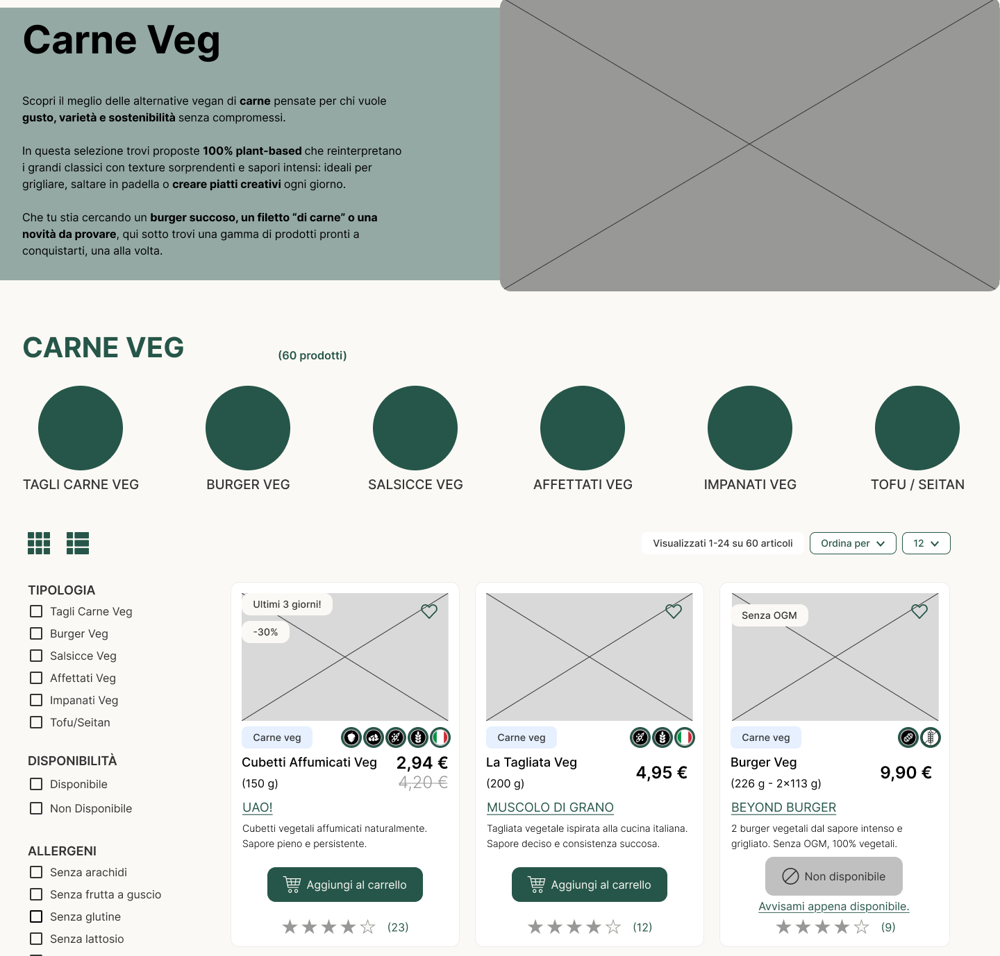
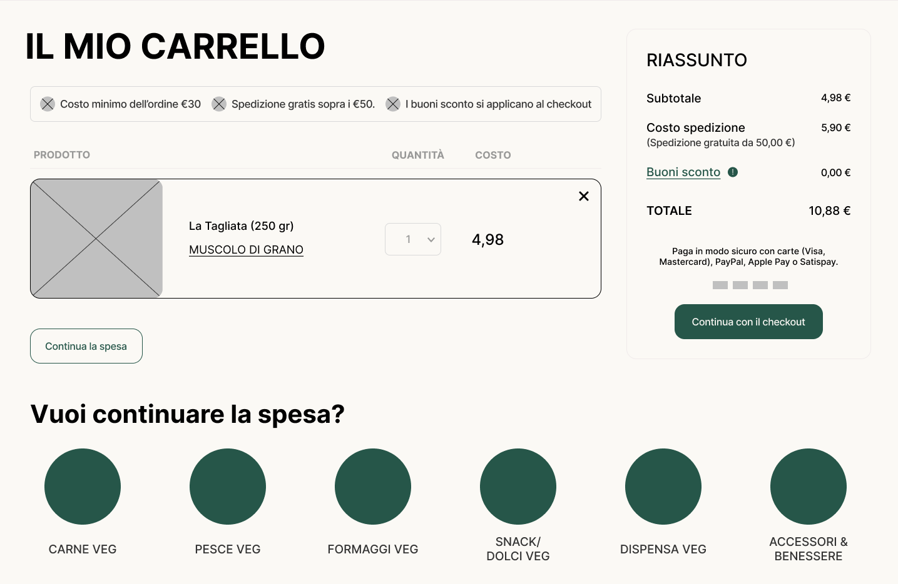

Osservazione
Rilievo di layout, proporzioni, spazi e gerarchie con DevTools.
WIREFRAMING 01 · iVEGAN
Dall’esercizio di ricostruzione su PlantX alla proposta di architettura, ai wireframe mid-fidelity desktop e al wireflow di acquisto iVegan.
Le schermate qui mostrate utilizzano le immagini dei wireframe originali. Puoi consultare anche il progetto Figma per esplorare tutti i dettagli.
DAL PROBLEMA ALLA STRUTTURA
01 · ESERCIZIO PRELIMINARE
Nella prima fase ho analizzato PlantX e ricostruito Home, PLP e PDP in versione desktop e mobile. Lo scopo era comprendere struttura, spaziature, allineamenti e componenti esistenti, mantenendone anche le incoerenze , non ridisegnarli.
La lettura di Chrome DevTools ha evidenziato un uso esteso di Flexbox, margini e gutter discontinui, tipografia non uniforme, CTA concorrenti e alcune criticità di contrasto. Per organizzare la ricostruzione ho utilizzato griglie da 12 colonne desktop e 4 colonne mobile.
Rilievo di layout, proporzioni, spazi e gerarchie con DevTools.
Wireframe mid-fi fedeli alle pagine PlantX originali.
Distinzione tra fedeltà del rilievo e successivo redesign iVegan.
02 · PAIN POINT E INFORMATION ARCHITECTURE
Le evidenze delle journey e dell’analisi di accessibilità sono state ricondotte a obiettivi concreti: unificare sito e shop, rendere subito riconoscibili ricerca, wishlist, account e carrello, esplicitare costi e soglie e dare spazio ai contenuti di fiducia.
La nuova alberatura distingue accesso ai prodotti, approfondimenti su etica e sostenibilità e servizi per l’acquisto. La sitemap presente nelle slide include tipologie di link e comportamenti dinamici: qui è mostrata una sintesi, non l’alberatura integrale.
Sito/shop e categorie discontinui.
Navigazione ordinata e prodotti più raggiungibili.
Etica, filiera, origine e recensioni difficili da reperire.
Sezioni dedicate a trasparenza, brand e certificazioni.
Soglia, spese di spedizione e buoni emergono tardi.
Totale e condizioni visibili lungo il percorso.
03 · WIREFRAME MID-FIDELITY
I wireframe iVegan sono stati sviluppati con griglia Bootstrap da 12 colonne, margine 15px e gutter 30px . Per la tipografia sono stati definiti stili Inter e una scala modulare Minor Third (1,2); scala di grigi e blu distinguono struttura e azioni.
Le schermate sono selezionate per il ruolo che svolgono nel funnel: dalla home alla consultazione del catalogo, dalla scheda prodotto al carrello, fino all’hub Etica & Sostenibilità.
01 · HOME
Topbar con scelta lingua e accesso all’app; CTA primaria e sezioni etica, categorie, offerte e recensioni.
02 · PLP
Breadcrumb, filtri per diete e sostenibilità, numero risultati, card informative e ordinamento.

03 · PDP
Disponibilità, brand, allergeni, recensioni, impatto e CTA coerente con lo stato prodotto.

04 · CARRELLO
Pop-up e riepilogo con totale, soglia minima, spedizione, sconti e checkout.

05 · HUB ETICA
Contenuti su etica, sostenibilità, filiera, certificazioni e collegamento allo shop.

04 · WIREFLOW DESKTOP
Il wireflow della Pt. 1 accompagna l’utente dall’accesso ai prodotti alla conferma dell’ordine. Sono rappresentati i passaggi di login/registrazione, l’inserimento dell’indirizzo e la scelta del pagamento. Il focus è la continuità dell’esperienza, non una verifica di risultati su un prodotto già sviluppato.
Prodotti vegani → Carne veg.
Scelta del prodotto e aggiunta al carrello.
Totale, soglie, buoni e accesso al checkout.
Accesso social o email; carrello conservato.
Dati di consegna, metodo di pagamento e conferma.
OUTPUT · WIREFRAMING 01
Rilievo fedelmente ricostruito su PlantX.
Nuova sitemap e requisiti del redesign.
Cinque aree desktop e wireflow d’acquisto.